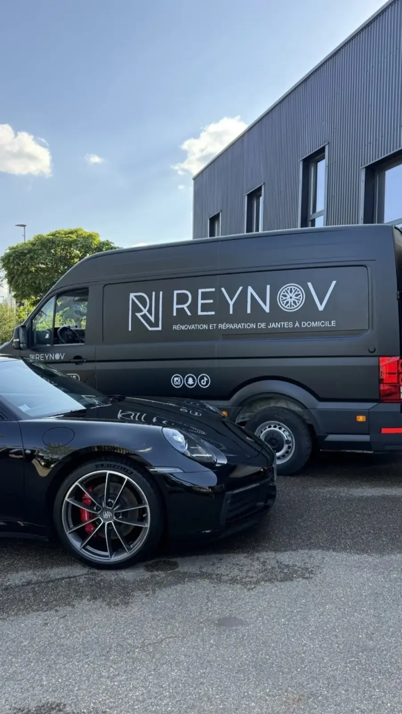
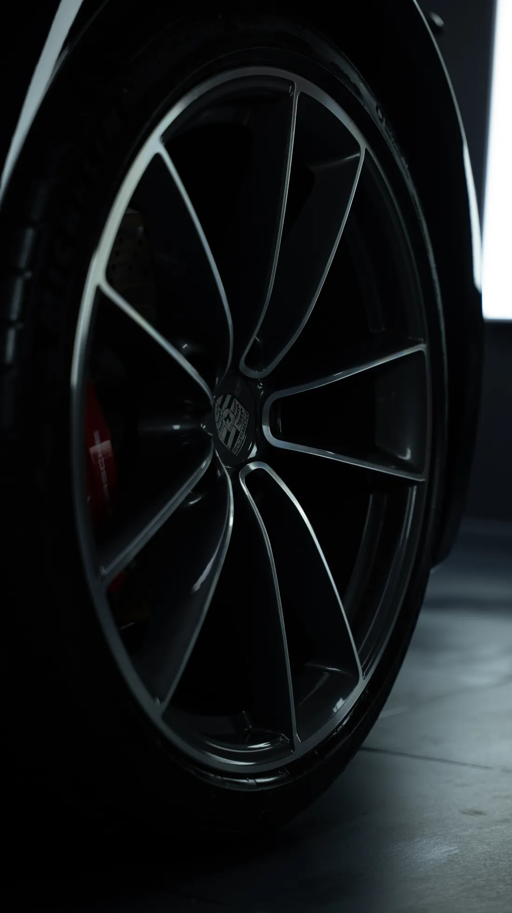

Pour la plupart des jantes, une rénovation soignée au pistolet donne un excellent résultat. Mais certains véhicules méritent plus : une sportive de prestige, un modèle de collection, une teinte rare à respecter au plus près. Pour ces cas, nous proposons désormais la peinture époxy, notre finition la plus aboutie.
Qu'est-ce que la peinture époxy ?
L'époxy est une résine réputée pour son adhérence exceptionnelle sur l'aluminium, sa résistance aux chocs et aux produits chimiques, et sa tenue dans le temps. Sur une jante, elle offre une base et une finition d'une grande régularité, avec un rendu net et profond.
Pourquoi la choisir pour un véhicule d'exception ?
- Une qualité d'origine, comme sortie d'usine : c'est la finition que nous recommandons quand l'exigence est la plus élevée.
- Une grande robustesse : une base très adhérente, résistante aux éclats et à la corrosion, utile pour des jantes qui doivent rester irréprochables.
- Un rendu fidèle : régularité de la teinte et du brillant sur les quatre jantes, sans écart visible entre elles.

Nous l'avons utilisée notamment sur une Porsche GT3, rénovée en noir satiné (voir la réalisation complète) : le type de véhicule où la jante doit être à la hauteur de la voiture. Retrouvez nos conseils sur les jantes Porsche et notre page rénovation de jantes Porsche.

Des couleurs très spécifiques, reproduites avec exactitude
Les véhicules de collection et de prestige demandent souvent une teinte précise : couleur d'origine du constructeur, nuance rare, finition historique. Pour cela, nous analysons la teinte existante au spectrophotomètre et la reproduisons à l'identique. Pour une création, nous partons des nuanciers RAL ou Pantone et faisons valider un échantillon avant l'application finale : vous savez exactement ce que vous obtiendrez. Nous nous adaptons à chaque client : la teinte et le niveau de brillance se définissent avec vous. Voir notre page personnalisation.
Un délai de 3 jours
Comptez 3 jours pour une peinture époxy, le temps nécessaire pour obtenir une finition de qualité d'origine, comme sortie d'usine. Pour une échéance précise (exposition, rassemblement, livraison), dites-le-nous dès la demande de devis.
Époxy ou peinture au pistolet ?
Les deux ont leur place. La peinture au pistolet, avec vernis bi-composant, reste excellente pour la majorité des rénovations et permet des retouches localisées. L'époxy est notre choix quand on vise le maximum de qualité et de durabilité. Nous vous conseillons après avoir vu vos photos et en fonction de votre véhicule.
Un véhicule d'exception, une teinte particulière, une exigence maximale ? Envoyez-nous des photos via le formulaire de devis et décrivez la finition souhaitée : réponse sous 24 h.
Questions fréquentes
Qu'est-ce que la peinture époxy sur une jante ?
L'époxy est une résine très adhérente sur l'aluminium, résistante aux chocs et aux produits chimiques. Elle permet une finition d'une grande régularité, que nous recommandons pour les véhicules haut de gamme et de collection.
Pour quels véhicules la peinture époxy est-elle recommandée ?
Pour les véhicules haut de gamme, de prestige ou de collection, et chaque fois que l'exigence de qualité et de durabilité est maximale, ou que la teinte demandée est très spécifique.
Peut-on reproduire une couleur précise ou d'origine ?
Oui. Nous analysons la teinte existante au spectrophotomètre pour la reproduire à l'identique, ou nous partons des nuanciers RAL et Pantone, avec validation d'un échantillon avant l'application. Nous nous adaptons à chaque client.
Quel est le prix d'une jante en peinture époxy ?
Le tarif dépend du véhicule, de la jante, de sa taille et de la teinte. La rénovation commence à 130 € HT par jante ; pour la finition époxy, envoyez vos photos : devis gratuit sous 24 h.
Combien de temps faut-il pour une peinture époxy ?
Comptez 3 jours, le temps nécessaire pour obtenir une finition de qualité d'origine, comme sortie d'usine.
Quelle qualité de finition obtient-on avec l'époxy ?
Une finition de qualité d'origine, comme sortie d'usine, avec une grande régularité de teinte et de brillant sur les quatre jantes.